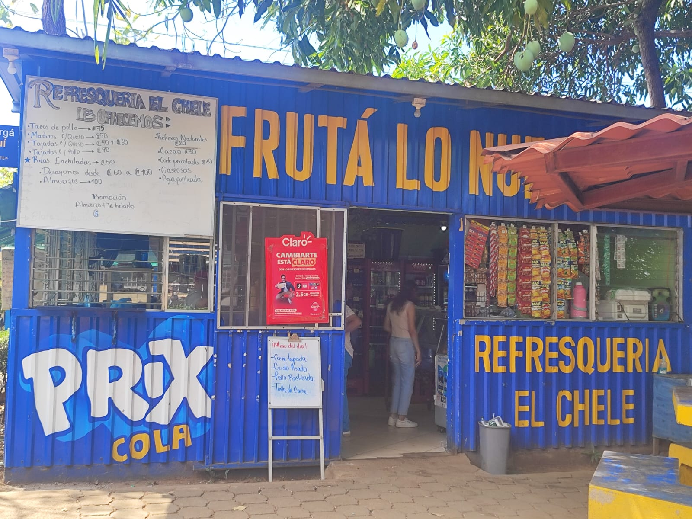
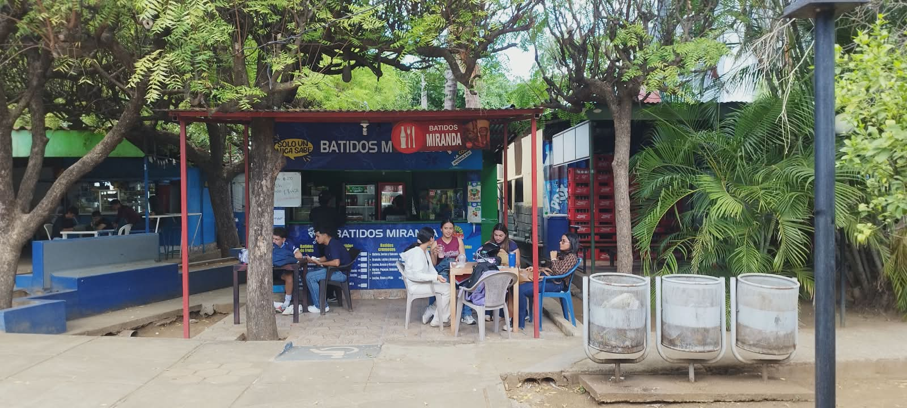
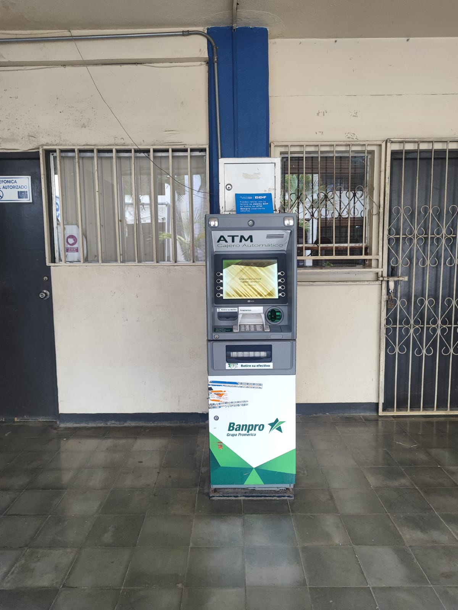

Universidad Nacional de Ingeniería
Plataforma institucional e interactiva desarrollada para brindar orientación, información académica y recursos útiles a estudiantes de la Universidad Nacional de Ingeniería.
Conoce la UNI
La Universidad Nacional de Ingeniería (UNI) es una institución de educación superior comprometida con la formación de profesionales altamente capacitados en las áreas de ingeniería, arquitectura y tecnologías aplicadas.
La UNI se caracteriza por promover la innovación, la investigación científica, el desarrollo tecnológico y el compromiso social, contribuyendo activamente al crecimiento y desarrollo del país mediante la formación integral de sus estudiantes.
Identidad Institucional
Misión
Formar profesionales integrales en ingeniería y arquitectura con excelencia académica, capacidad científica, tecnológica y humanística, comprometidos con el desarrollo sostenible y la transformación social del país.
Visión
Ser una universidad líder en innovación, investigación y formación tecnológica, reconocida nacional e internacionalmente por su calidad educativa y su aporte al desarrollo científico y social.
Valores
La UNI promueve valores como responsabilidad, ética profesional, innovación, compromiso social, respeto, excelencia académica y trabajo colaborativo en beneficio de la comunidad universitaria.
Áreas Académicas
Ingeniería en Sistemas
Desarrollo tecnológico y software.
Ingeniería Civil
Infraestructura y construcción.
Arquitectura
Diseño y planificación urbana.
Electrónica
Tecnologías electrónicas y automatización.
Accesos Rápidos
📘 Guía de Campus – UNI
Sección: Ambiente UNI
Bienvenido a la Universidad Nacional de Ingeniería.
Aunque al inicio pueda parecer un entorno nuevo y desafiante, con el tiempo se convertirá en una de las etapas más significativas de tu vida académica y personal. A continuación, se presentan una serie de recomendaciones orientadas a facilitar tu adaptación y desarrollo dentro de la institución.
Normas y Recomendaciones Importantes
“Cosas que no debes hacer en la UNI”
A continuación, se presentan una serie de normas y recomendaciones que contribuirán a una mejor convivencia y evitarán inconvenientes dentro del entorno universitario:
Conductas
- No fumar dentro de laboratorios ni aulas.
- No consumir alimentos en espacios donde esté prohibido.
- No grabar contenido dentro de laboratorios sin autorización.
- Evitar el uso de aplicaciones o contenidos inapropiados durante clases.
Normas académicas
- No inscribir más asignaturas de las que realmente puedes manejar.
- No subestimar asignaturas fundamentales como matemáticas o física.
- No rendirse ante una asignatura; existen oportunidades adicionales.
- Evitar depender únicamente de comentarios externos sobre docentes.
Normas institucionales
- Portar siempre el carnet o documentación requerida para el ingreso.
- No intentar ingresar con identificación ajena.
- Cumplir con los reglamentos establecidos por la institución.
Hábitos y decisiones
- No descuidar la salud mental por exceso de estudio.
- No dejarse influenciar por actitudes negativas o grupos.
- Evitar conductas que puedan generar conflictos innecesarios.
Nuestros Favoritos
Desliza o haz clic sobre las tarjetas para descubrir por qué recomendamos estos spots clave de la comunidad UNI-WAY.

Comedor El Chele
Calidad, precio y porciones generosas.

Batidos Miranda
Batidos naturales y nutritivos.

Biblioteca Central
El mejor ambiente para avanzar tus proyectos.

Cajero Automático
Efectivo rápido para cualquier emergencia o gasto imprevisto.